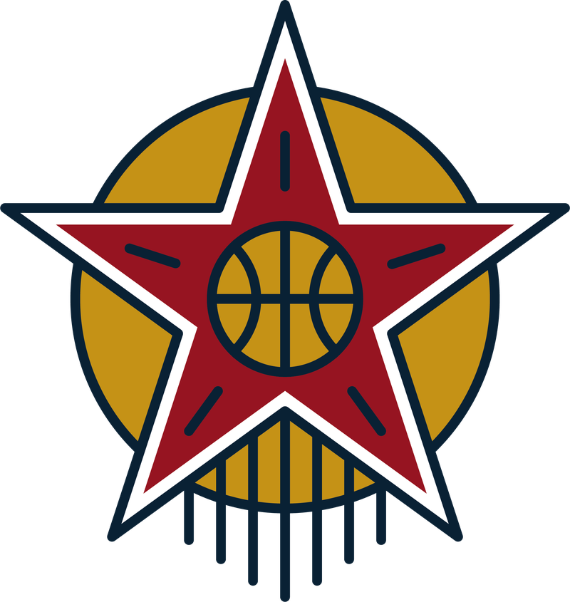

L'équipe technique que l'on peut retrouver sur le terrain lors des différents évènements.

Elie Fedensieu
Entraîneur
Toulouse Basketball Club
Formé à Toulouse, Elie intègre le pôle espoirs à 13 ans et évolue, en parallèle, en championnat de France U15. Suivent trois années à l'INSEP puis deux à l'ASVEL, cinq années durant lesquelles il a la chance d'évoluer dans les différentes Équipes de France jeunes avec lesquelles il est médaillé d'argent au championnat d'Europe 2012 (U16), puis aux Jeux olympiques de la Jeunesse 2014 (U18). De retour à Toulouse, il joue, entre autres, au TBC (N2) puis au TOAC (N3 et N2). C'est au fil de ces saisons qu'il commence à se former et à entraîner, d'abord des équipes U18 et U21 (Régionale 1), puis des U15 en championnat de France. Il encadre aujourd'hui les seniors du TBC en Régionale 2.
Titulaire d'un DEJEPS Basket, il est le référent technique du staff.
Président de l'association, vous le retrouverez sur le terrain, principalement durant les stages U11 et Élite. Son domaine : le travail autour du tir dans sa globalité, le jeu rapide et le jeu de transition. Il s'appuie également beaucoup sur son passage par le haut niveau pour transmettre à ceux qui y aspirent.
Sa phrase fétiche : « Ne gaspille pas ton énergie sur ce que tu ne contrôles pas. »
Philippe Rioux
Entraîneur / Préparation physique
Toulouse Métropole Basket
Philippe découvre le basket à 15 ans en région parisienne, d'abord comme joueur chez les Spartiates de Cergy-Pontoise, puis très vite se révèle une seconde passion : la transmission. Arrivé à Toulouse il y a quelques saisons, il prend en charge différentes équipes au sein du TOAC Basket, notamment dans le secteur féminin et l'équipe U21 masculine (Régionale 1). Aujourd'hui spécialisé dans le basket féminin, il est en charge des U13 (Régionale 1) et des seniors du TMB.
Titulaire d'un BPJEPS Basket, il poursuit sa formation technique.
En charge de la communication de l'association, il met en valeur les événements et la vie de l'EMBT (site internet, réseaux sociaux, etc.). Quand il pose son appareil photo ou son ordinateur, c'est pour remettre sa casquette de technicien et animer les séances de nos différents stages. Son domaine : la préparation physique, le tir et le 1 contre 1. Il transmet des valeurs de dépassement, de dureté et d'exigence, et pousse chacun à identifier ses points forts pour les exploiter.
Sa phrase fétiche : « Tous les tirs que tu ne prends pas sont ratés. »
Alan Guyomarch
Entraîneur / Préparateur mental
Toulouse Basketball Club
Alan est formé à Toulouse, notamment en championnat de France chez les jeunes, puis principalement en Régionale 1 pour ses années seniors. Il bascule sur le coaching à Rennes durant son parcours universitaire, où il entraîne les seniors de Rennes (Régionale 2), et continue comme assistant et préparateur mental avec les U15 du TOAC en championnat de France avant de rejoindre l'équipe seniors du TBC (Régionale 2), club dans lequel il structure une cellule de psychologie du sport.
Professeur agrégé d'EPS, il réalise actuellement une thèse en neurosciences sur la dynamique de groupe et intervient dans plusieurs formations en préparation mentale.
Au sein de l'association, il est en charge de tout ce qui touche à la préparation mentale, et plus particulièrement sa dimension collective. Il est également responsable de la collaboration entre l'EMBT et les universités de Toulouse, afin de suivre les joueurs le plus longtemps possible dans leur parcours de formation.
Sa phrase fétiche : « To me, teamwork is the beauty of our sport, where you have five acting as one. You become selfless. » Mike Krzyzewski
Clément Seailles
Entraîneur
US Colomiers Basket
Clément commence le basket à 5 ans à Caussens dans le Gers, puis évolue jusqu'à intégrer l'équipe U18 de Valence (Régionale 1). Il passe sur le banc il y a cinq ans à Ramonville et rejoint le TOAC la saison suivante, en tant qu'assistant sur l'équipe U15 Élite. Il prend ensuite les rênes de l'équipe Espoirs (Régionale 1) avec laquelle il est sacré champion d'Occitanie, tout en étant assistant avec les seniors (NM2). Il entraîne aujourd'hui les seniors garçons et filles du côté de Colomiers.
Titulaire d'une licence STAPS mention Entraînement sportif et d'un DETB, il souhaite poursuivre sa formation côté basket avec en ligne de mire l'obtention d'un DEJEPS dans les prochaines années.
Au sein de l'association, il intervient principalement sur l'entraînement et le développement des jeunes. Son domaine : le développement du tir, de l'analytique jusqu'à la contextualisation.
Sa phrase fétiche : « Défendre ensemble, courir ensemble, tomber ensemble, se relever ensemble. »
Thomas Rioux
Entraîneur
Avenir Muretin Basket-Ball
Thomas grandit dans le basket en région parisienne, où il joue en jeune à Colombes puis à Levallois. Les blessures s'accumulent et mettent un terme à son parcours de joueur. Faute de pouvoir continuer sur le parquet, il revient au basket en 2010, sur le banc cette fois : il débute comme entraîneur à Cergy, encadre toutes les catégories au niveau régional, jusqu'aux U18 avec les garçons et en U15 avec les filles. Arrivé à Toulouse, il rejoint le TOAC où il prend d'abord en charge les U18 (Régionale 1), puis les U15 au même niveau durant trois saisons. Il entraîne aujourd'hui les U15 (Régionale 1) à Muret.
Il commence à acquérir ses diplômes de technicien en 2019, allant jusqu'au DETB obtenu en 2024.
Trésorier de l'association, il pilote également l'organisation des différents tournois. On le retrouve par ailleurs sur le terrain pour animer certains de nos stages. Son domaine : le jeu rapide et le jeu de transition, qu'il aborde par l'attitude, les changements de statut et la lecture du jeu à haute vitesse.
Sa phrase fétiche : « Les dunks font lever les foules, la défense fait gagner des titres. »